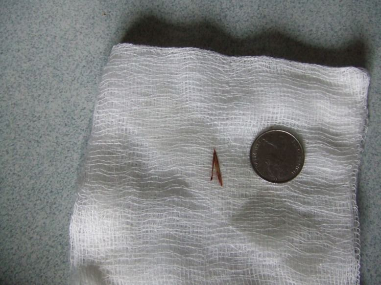
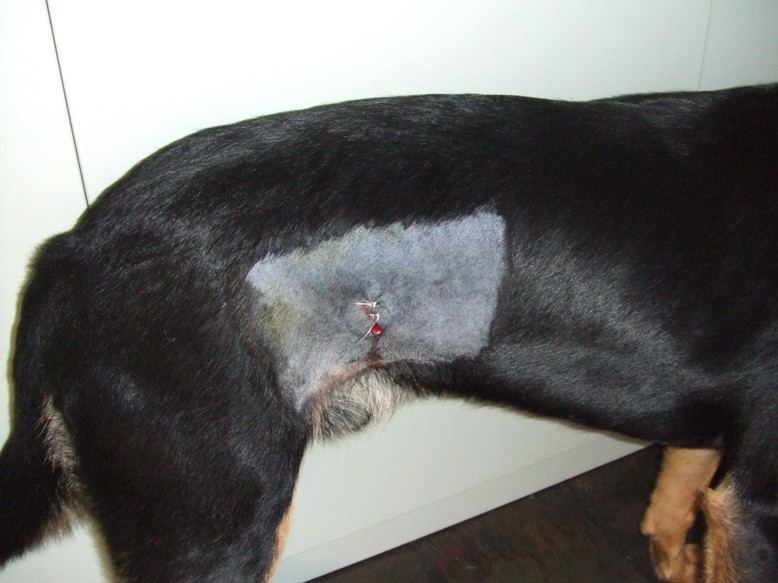
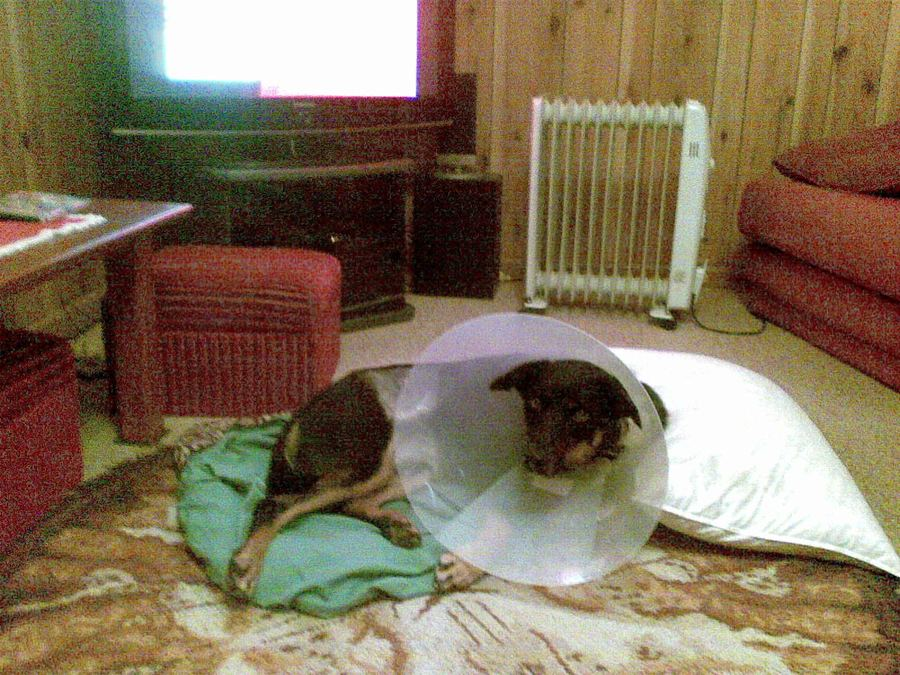

How do You Keep a kelpie Quiet?
One of the delights of living in the country is riding a bike around the pines and local roads with a Kelpie called Banjo. And Nuran loves walking with her kelpie around the pines, watching him guess every twist and turn she is likely to make on her walk and running ahead then doubling back when she fails to follow. Giving us the kelpie eye, a fixed stare until he diagnoses what we are doing and then bounds off with his tail raised to signal his success.
Unfortunately when the grass grows long in the breaks and a dog bounds at full speed through the undergrowth something happens which is not conducive to a dogs well being. So it must have been one day after Christmas when Banjo developed a lump on his right flank which grew and grew and grew! It was off to the vets in Penola for a diagnosis and an apology for not bringing him in sooner for his Parvo booster as the scuttle butt was that boosters are a waste of time when you are on a pension. So the vet jabbed him wormed him and felt his lump and said it was a grass seed that had developed a cyst around it, waste of time taking him to the vet as that's exactly what John had told us earlier, but he got his jab and we got a $100 bill. If he swells he said bring him back.
Well swell it did so he was taken back and booked in for surgery to remove his lump. Armed with details of Bills account for a sick cat , $650 and Dons account of a two teeth extraction for Lucy his midget dog, $600, it was with trepidation we took the hyper kelpie Banjo to the clinic.
I see on the account it took two jabs to sedate him, no wonder. And $125 of anesthetic gas to keep him under while they exorcised the wound. It was an abscess started by a, guess what, grass seed!  


Keep him quiet! Easier said than done.
Walk him into the lounge and he darts from place to place. Ask him to go slowly and he does for five steps then guesses what you want him to do so belts there as quick as he can. Bert's car goes past and he hates Bert's car so runs to the back gate barking all the time. His wound his draining fine as its still open!
On the bright side I can give him the antibiotic as easily as a kid taking lollies. One poke with the finger over the tongue and it goes down. But those accusing eyes when I leave him behind on my ride to the Post Office to get the paper.... no wonder hangmen put a hood over their victims.
Nuran wouldn't even go for a walk today as Banjo wouldn't be with her She couldn't leave those orange eyes staring into her back as the rolladoor goes down. Something about aching legs and a headache she said. Must be sympathy pains methinks. And we have another week to go.
On the upside for Banjo he sleeps in the lounge as we want to keep him warm and anyway the gigantic collar he wears wouldn't fit through the kennel door and he still gets his Kangaroo Pilaf for tea and dog biscuits for breakfast but he would rather risk it all and go for a run. 

Banjo is a celebrity at the Post Office as when we call in on the morning run to pick up the paper the kids waiting for the school bus make a big fuss of him ,which of course he laps up and then eats any of the school lunches they have that they don't fancy. Here comes Banjo they all shout as I pull in...bloody Kelpie thinks he is a film star like Red Dog. No wonder he gives me that Kelpie eye!
The kids asked me "Where is Banjo" and I said he had an operation, there was a collective OOOh! and I expected a visit for Banjo at home! He will be a hero when he pulls in the next time he is able to and no doubt will show them all his scar!
Oh well the lump is gone but apart from two jabs and 30 minutes on gas how the hell can you keep a Kelpie quiet!
28.03.12